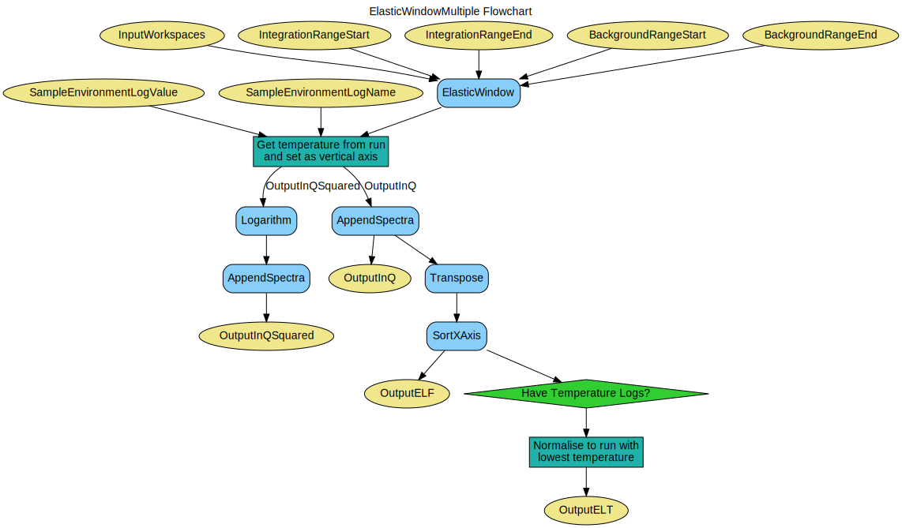

\(\renewcommand\AA{\unicode{x212B}}\)
ElasticWindowMultiple v1¶
{kind=link}
ElasticWindowMultiple dialog.¶
Summary¶
Performs the ElasticWindow algorithm over multiple input workspaces
Properties¶
Name |
Direction |
Type |
Default |
Description |
|---|---|---|---|---|
InputWorkspaces |
Input |
WorkspaceGroup |
Mandatory |
Grouped input workspaces |
IntegrationRangeStart |
Input |
number |
0 |
Start of integration range in time of flight |
IntegrationRangeEnd |
Input |
number |
0 |
End of integration range in time of flight |
BackgroundRangeStart |
Input |
number |
Optional |
Start of background range in time of flight |
BackgroundRangeEnd |
Input |
number |
Optional |
End of background range in time of flight |
SampleEnvironmentLogName |
Input |
string |
sample |
Name of the sample environment log entry |
SampleEnvironmentLogValue |
Input |
string |
last_value |
Value selection of the sample environment log entry. Allowed values: [‘last_value’, ‘average’] |
OutputInQ |
Output |
Mandatory |
Output workspace in Q |
|
OutputInQSquared |
Output |
Mandatory |
Output workspace in Q Squared |
|
OutputELF |
Output |
Output workspace ELF |
||
OutputELT |
Output |
Output workspace ELT |
Description¶
This algorithm performs the ElasticWindow algorithm over a set of workspaces provided as a workspace group, the binning of each workspace must match.
The Q and Q-squared output workspaces show the output of ElasticWindow for each input workspace, the ELF workspace shows the data transposed with the X axis in either sample temperature or run number of temperature is not available.
The ELT workspace shows the normalisation of the ELF workspace to run with the lowest sample temperature.
Workflow¶
Usage¶
# This test needs the facility to be set to ISIS to load the IRIS instrument
facility = config['default.facility']
config['default.facility'] = 'ISIS'
# Create some sample data
widths = [15.0, 17.5, 20.0, 22.5, 25.0, 27.5, 30.0]
for idx, fwhm in enumerate(widths):
ws_name = 'ws_%.1f' % fwhm
function = 'name=Lorentzian,Amplitude=100,PeakCentre=27500,FWHM=%f' % fwhm
CreateSampleWorkspace(Function='User Defined',
UserDefinedFunction=function,
XMin=27000,
XMax=28000,
BinWidth=10,
NumBanks=1,
OutputWorkspace=ws_name)
ConvertUnits(InputWorkspace=ws_name,
OutputWorkspace=ws_name,
Target='DeltaE',
EMode='Indirect',
EFixed=1.555)
Rebin(InputWorkspace=ws_name,
OutputWorkspace=ws_name,
Params=[-0.2,0.004,0.2])
LoadInstrument(Workspace=ws_name,
InstrumentName='IRIS', RewriteSpectraMap=True)
SetInstrumentParameter(Workspace=ws_name,
ParameterName='Efixed',
DetectorList=range(1,113),
ParameterType='Number',
Value='1.555')
mtd[ws_name].mutableRun()['run_number'] = idx + 1
input = GroupWorkspaces(InputWorkspaces=['ws_%.1f' % fwhm for fwhm in widths])
# Run the algorithm
q, q2, elf = ElasticWindowMultiple(input, -0.1, 0.1)
print('ELF X axis: %s' % elf.getAxis(0).getUnit().caption())
print('ELF spectra count: %d' % elf.getNumberHistograms())
print('ELF bin count: %d' % elf.blocksize())
# Reset the facility to the original setting
config['default.facility'] = facility
ELF X axis: Run No
ELF spectra count: 100
ELF bin count: 7
Categories: AlgorithmIndex | Workflow\Inelastic | Inelastic\Indirect
Source¶
Python: ElasticWindowMultiple.py